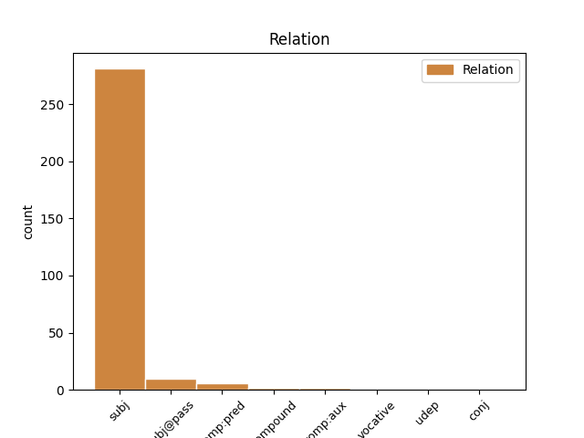
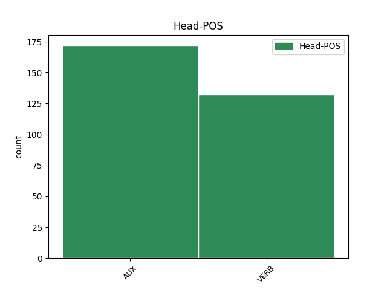
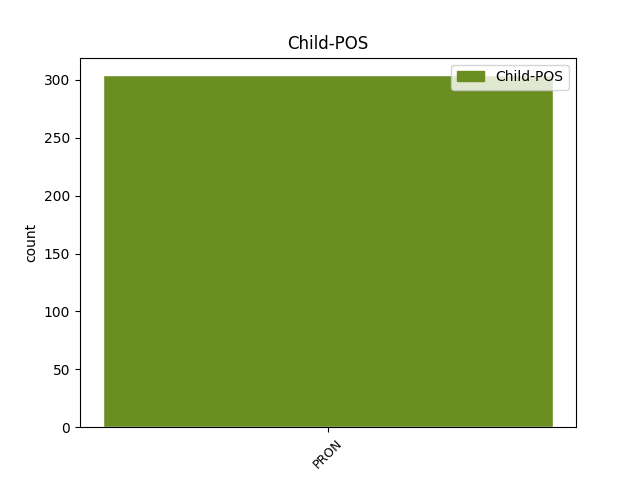

Distribution of features within this leaf



Agreement Rules sorted by frequency.
- When the dependent token is the subject(subj) of the head token, and the dependent token is PRON.
1 No _ _ _ _ 0 _ _ _
2 , _ _ _ _ 0 _ _ _
3 obzirom _ _ _ _ 0 _ _ _
4 da _ _ _ _ 0 _ _ _
5 je biti AUX Var3s Mood=Ind|Number=Sing|Person=3|Tense=Pres|VerbForm=Fin 0 _ _ _
6 ona on PRON Pp3fsn Case=Nom|Gender=Fem|Number=Sing|Person=3|PronType=Prs 5 subj _ _
7 već _ _ _ _ 0 _ _ _
8 na _ _ _ _ 0 _ _ _
9 funkciji _ _ _ _ 0 _ _ _
10 predsjednice _ _ _ _ 0 _ _ _
11 GO-a _ _ _ _ 0 _ _ _
12 , _ _ _ _ 0 _ _ _
13 za _ _ _ _ 0 _ _ _
14 kandidaturu _ _ _ _ 0 _ _ _
15 za _ _ _ _ 0 _ _ _
16 mjesto _ _ _ _ 0 _ _ _
17 županijske _ _ _ _ 0 _ _ _
18 čelnice _ _ _ _ 0 _ _ _
19 morat _ _ _ _ 0 _ _ _
20 će _ _ _ _ 0 _ _ _
21 podnijeti _ _ _ _ 0 _ _ _
22 ostavku _ _ _ _ 0 _ _ _
23 , _ _ _ _ 0 _ _ _
24 pa _ _ _ _ 0 _ _ _
25 će _ _ _ _ 0 _ _ _
26 stoga _ _ _ _ 0 _ _ _
27 zadarski _ _ _ _ 0 _ _ _
28 HNS _ _ _ _ 0 _ _ _
29 morati _ _ _ _ 0 _ _ _
30 izabrati _ _ _ _ 0 _ _ _
31 i _ _ _ _ 0 _ _ _
32 novog _ _ _ _ 0 _ _ _
33 čelnika _ _ _ _ 0 _ _ _
34 Gradske _ _ _ _ 0 _ _ _
35 organizacije _ _ _ _ 0 _ _ _
36 . _ _ _ _ 0 _ _ _
1 Studentima _ _ _ _ 0 _ _ _
2 će _ _ _ _ 0 _ _ _
3 biti _ _ _ _ 0 _ _ _
4 omogućen _ _ _ _ 0 _ _ _
5 download _ _ _ _ 0 _ _ _
6 skripta _ _ _ _ 0 _ _ _
7 i _ _ _ _ 0 _ _ _
8 udžbenika _ _ _ _ 0 _ _ _
9 ( _ _ _ _ 0 _ _ _
10 oni oni PRON Pp3mpn Case=Nom|Gender=Masc|Number=Plur|Person=3|PronType=Prs 13 subj@pass _ _
11 sasvim _ _ _ _ 0 _ _ _
12 sigurno _ _ _ _ 0 _ _ _
13 nisu biti AUX Var3p Mood=Ind|Number=Plur|Person=3|Polarity=Neg|Tense=Pres|VerbForm=Fin 0 _ _ _
14 terorizirani _ _ _ _ 0 _ _ _
15 sa _ _ _ _ 0 _ _ _
16 LMS-om _ _ _ _ 0 _ _ _
17 ) _ _ _ _ 0 _ _ _
18 , _ _ _ _ 0 _ _ _
19 a _ _ _ _ 0 _ _ _
20 iPad _ _ _ _ 0 _ _ _
21 će _ _ _ _ 0 _ _ _
22 moći _ _ _ _ 0 _ _ _
23 koristiti _ _ _ _ 0 _ _ _
24 i _ _ _ _ 0 _ _ _
25 za _ _ _ _ 0 _ _ _
26 razmjenu _ _ _ _ 0 _ _ _
27 datoteka _ _ _ _ 0 _ _ _
28 te _ _ _ _ 0 _ _ _
29 za _ _ _ _ 0 _ _ _
30 održavanje _ _ _ _ 0 _ _ _
31 bilježaka _ _ _ _ 0 _ _ _
32 . _ _ _ _ 0 _ _ _
1 Ipak _ _ _ _ 0 _ _ _
2 , _ _ _ _ 0 _ _ _
3 najbolje _ _ _ _ 0 _ _ _
4 obrazovanje _ _ _ _ 0 _ _ _
5 je biti AUX Var3s Mood=Ind|Number=Sing|Person=3|Tense=Pres|VerbForm=Fin 0 _ _ _
6 ono on PRON Pp3nsn Case=Nom|Gender=Neut|Number=Sing|Person=3|PronType=Prs 5 comp:pred _ _
7 koje _ _ _ _ 0 _ _ _
8 donosi _ _ _ _ 0 _ _ _
9 osobni _ _ _ _ 0 _ _ _
10 kontakt _ _ _ _ 0 _ _ _
11 i _ _ _ _ 0 _ _ _
12 interakcija _ _ _ _ 0 _ _ _
13 , _ _ _ _ 0 _ _ _
14 do _ _ _ _ 0 _ _ _
15 koje _ _ _ _ 0 _ _ _
16 dolazi _ _ _ _ 0 _ _ _
17 u _ _ _ _ 0 _ _ _
18 okruženju _ _ _ _ 0 _ _ _
19 učionice _ _ _ _ 0 _ _ _
20 ili _ _ _ _ 0 _ _ _
21 treninga _ _ _ _ 0 _ _ _
22 na _ _ _ _ 0 _ _ _
23 radnom _ _ _ _ 0 _ _ _
24 mjestu _ _ _ _ 0 _ _ _
25 . _ _ _ _ 0 _ _ _
1 Pa _ _ _ _ 0 _ _ _
2 sam _ _ _ _ 0 _ _ _
3 ga _ _ _ _ 0 _ _ _
4 pozvala _ _ _ _ 0 _ _ _
5 na _ _ _ _ 0 _ _ _
6 našu _ _ _ _ 0 _ _ _
7 Konferenciju _ _ _ _ 0 _ _ _
8 i _ _ _ _ 0 _ _ _
9 on on PRON Pp3msn Case=Nom|Gender=Masc|Number=Sing|Person=3|PronType=Prs 10 comp:aux _ _
10 je biti AUX Var3s Mood=Ind|Number=Sing|Person=3|Tense=Pres|VerbForm=Fin 0 _ _ _
11 poziv _ _ _ _ 0 _ _ _
12 prihvatio _ _ _ _ 0 _ _ _
13 . _ _ _ _ 0 _ _ _
1 Jer _ _ _ _ 0 _ _ _
2 je _ _ _ _ 0 _ _ _
3 mnoštvo _ _ _ _ 0 _ _ _
4 ljudskih _ _ _ _ 0 _ _ _
5 stvari _ _ _ _ 0 _ _ _
6 dobro _ _ _ _ 0 _ _ _
7 upravljano _ _ _ _ 0 _ _ _
8 kad _ _ _ _ 0 _ _ _
9 njime on PRON Pp3nsi Case=Ins|Gender=Neut|Number=Sing|Person=3|PronType=Prs 10 udep _ _
10 upravlja upravljati VERB Vmr3s Mood=Ind|Number=Sing|Person=3|Tense=Pres|VerbForm=Fin 0 _ _ _
11 samo _ _ _ _ 0 _ _ _
12 jedan _ _ _ _ 0 _ _ _
13 . _ _ _ _ 0 _ _ _
1 Boljka _ _ _ _ 0 _ _ _
2 Ilićeva _ _ _ _ 0 _ _ _
3 redizajna _ _ _ _ 0 _ _ _
4 možda _ _ _ _ 0 _ _ _
5 je _ _ _ _ 0 _ _ _
6 upravo _ _ _ _ 0 _ _ _
7 u _ _ _ _ 0 _ _ _
8 tome _ _ _ _ 0 _ _ _
9 što _ _ _ _ 0 _ _ _
10 je biti AUX Var3s Mood=Ind|Number=Sing|Person=3|Tense=Pres|VerbForm=Fin 0 _ _ _
11 od _ _ _ _ 0 _ _ _
12 uredništva _ _ _ _ 0 _ _ _
13 zahtijevao _ _ _ _ 0 _ _ _
14 bitnu _ _ _ _ 0 _ _ _
15 promjenu _ _ _ _ 0 _ _ _
16 , _ _ _ _ 0 _ _ _
17 dakle _ _ _ _ 0 _ _ _
18 ono on PRON Pp3nsn Case=Nom|Gender=Neut|Number=Sing|Person=3|PronType=Prs 10 conj _ orig_deprel=obj
19 od _ _ _ _ 0 _ _ _
20 čega _ _ _ _ 0 _ _ _
21 ono _ _ _ _ 0 _ _ _
22 očito _ _ _ _ 0 _ _ _
23 najviše _ _ _ _ 0 _ _ _
24 zazire _ _ _ _ 0 _ _ _
25 . _ _ _ _ 0 _ _ _
1 - _ _ _ _ 0 _ _ _
2 Svrši svršiti VERB Vmm2s Mood=Imp|Number=Sing|Person=2|VerbForm=Fin 0 _ _ _
3 već _ _ _ _ 0 _ _ _
4 jednom _ _ _ _ 0 _ _ _
5 , _ _ _ _ 0 _ _ _
6 ti ti PRON Pp2-sv Case=Voc|Number=Sing|Person=2|PronType=Prs 2 vocative _ _
7 šuškalo _ _ _ _ 0 _ _ _
8 , _ _ _ _ 0 _ _ _
9 da _ _ _ _ 0 _ _ _
10 ti _ _ _ _ 0 _ _ _
11 meso _ _ _ _ 0 _ _ _
12 pod _ _ _ _ 0 _ _ _
13 batinama _ _ _ _ 0 _ _ _
14 načetvero _ _ _ _ 0 _ _ _
15 ne _ _ _ _ 0 _ _ _
16 ispuca _ _ _ _ 0 _ _ _
17 - _ _ _ _ 0 _ _ _
18 zasiječe _ _ _ _ 0 _ _ _
19 mu _ _ _ _ 0 _ _ _
20 plemić _ _ _ _ 0 _ _ _
21 u _ _ _ _ 0 _ _ _
22 besjedu _ _ _ _ 0 _ _ _
23 . _ _ _ _ 0 _ _ _
Disagree Examples:
1 - _ _ _ _ 0 _ _ _
2 Mi mi PRON Pp1-pn Case=Nom|Number=Plur|Person=1|PronType=Prs 5 subj _ _
3 zaposlenici _ _ _ _ 0 _ _ _
4 ne _ _ _ _ 0 _ _ _
5 bi biti AUX Vaa3p Mood=Cnd|Number=Plur|Person=3|Tense=Past|VerbForm=Fin 0 _ _ _
6 smjeli _ _ _ _ 0 _ _ _
7 govoriti _ _ _ _ 0 _ _ _
8 da _ _ _ _ 0 _ _ _
9 je _ _ _ _ 0 _ _ _
10 kriv _ _ _ _ 0 _ _ _
11 Ferrari _ _ _ _ 0 _ _ _
12 , _ _ _ _ 0 _ _ _
13 prije _ _ _ _ 0 _ _ _
14 će _ _ _ _ 0 _ _ _
15 nam _ _ _ _ 0 _ _ _
16 oprostiti _ _ _ _ 0 _ _ _
17 ako _ _ _ _ 0 _ _ _
18 kažemo _ _ _ _ 0 _ _ _
19 da _ _ _ _ 0 _ _ _
20 je _ _ _ _ 0 _ _ _
21 kriv _ _ _ _ 0 _ _ _
22 vozač _ _ _ _ 0 _ _ _
23 . _ _ _ _ 0 _ _ _
1 U _ _ _ _ 0 _ _ _
2 tebi _ _ _ _ 0 _ _ _
3 se _ _ _ _ 0 _ _ _
4 budi _ _ _ _ 0 _ _ _
5 lagana _ _ _ _ 0 _ _ _
6 zavist _ _ _ _ 0 _ _ _
7 , _ _ _ _ 0 _ _ _
8 ali _ _ _ _ 0 _ _ _
9 ne _ _ _ _ 0 _ _ _
10 zbog _ _ _ _ 0 _ _ _
11 toga _ _ _ _ 0 _ _ _
12 što _ _ _ _ 0 _ _ _
13 on _ _ _ _ 0 _ _ _
14 ima _ _ _ _ 0 _ _ _
15 , _ _ _ _ 0 _ _ _
16 nego _ _ _ _ 0 _ _ _
17 jer _ _ _ _ 0 _ _ _
18 bi biti AUX Vaa3s Mood=Cnd|Number=Sing|Person=3|Tense=Past|VerbForm=Fin 0 _ _ _
19 i _ _ _ _ 0 _ _ _
20 ti ti PRON Pp2-sn Case=Nom|Number=Sing|Person=2|PronType=Prs 18 subj _ _
21 želio _ _ _ _ 0 _ _ _
22 . _ _ _ _ 0 _ _ _
1 Ako _ _ _ _ 0 _ _ _
2 vam _ _ _ _ 0 _ _ _
3 netko _ _ _ _ 0 _ _ _
4 pred _ _ _ _ 0 _ _ _
5 policijom _ _ _ _ 0 _ _ _
6 prizna _ _ _ _ 0 _ _ _
7 počinjenje _ _ _ _ 0 _ _ _
8 krivičnog _ _ _ _ 0 _ _ _
9 djela _ _ _ _ 0 _ _ _
10 , _ _ _ _ 0 _ _ _
11 a _ _ _ _ 0 _ _ _
12 tom _ _ _ _ 0 _ _ _
13 priznanju _ _ _ _ 0 _ _ _
14 nije _ _ _ _ 0 _ _ _
15 prisutan _ _ _ _ 0 _ _ _
16 branitelj _ _ _ _ 0 _ _ _
17 , _ _ _ _ 0 _ _ _
18 a _ _ _ _ 0 _ _ _
19 pred _ _ _ _ 0 _ _ _
20 istražnim _ _ _ _ 0 _ _ _
21 sucem _ _ _ _ 0 _ _ _
22 isto _ _ _ _ 0 _ _ _
23 to _ _ _ _ 0 _ _ _
24 porekne _ _ _ _ 0 _ _ _
25 , _ _ _ _ 0 _ _ _
26 onda _ _ _ _ 0 _ _ _
27 nema _ _ _ _ 0 _ _ _
28 dokaza _ _ _ _ 0 _ _ _
29 , _ _ _ _ 0 _ _ _
30 vi vi PRON Pp2-pn Case=Nom|Number=Plur|Person=2|PronType=Prs 32 subj _ _
31 se _ _ _ _ 0 _ _ _
32 osjećate osjećati VERB Vmr3s Mood=Ind|Number=Sing|Person=3|Tense=Pres|VerbForm=Fin 0 _ _ _
33 glupo _ _ _ _ 0 _ _ _
34 jer _ _ _ _ 0 _ _ _
35 znate _ _ _ _ 0 _ _ _
36 pravu _ _ _ _ 0 _ _ _
37 istinu _ _ _ _ 0 _ _ _
38 , _ _ _ _ 0 _ _ _
39 a _ _ _ _ 0 _ _ _
40 od _ _ _ _ 0 _ _ _
41 tog _ _ _ _ 0 _ _ _
42 saznanja _ _ _ _ 0 _ _ _
43 nema _ _ _ _ 0 _ _ _
44 nikakve _ _ _ _ 0 _ _ _
45 koristi _ _ _ _ 0 _ _ _
46 . _ _ _ _ 0 _ _ _
1 Popin _ _ _ _ 0 _ _ _
2 libar _ _ _ _ 0 _ _ _
3 otvorile _ _ _ _ 0 _ _ _
4 su _ _ _ _ 0 _ _ _
5 ženska _ _ _ _ 0 _ _ _
6 i _ _ _ _ 0 _ _ _
7 muška _ _ _ _ 0 _ _ _
8 klapa _ _ _ _ 0 _ _ _
9 , _ _ _ _ 0 _ _ _
10 Neverin _ _ _ _ 0 _ _ _
11 i _ _ _ _ 0 _ _ _
12 Tragos _ _ _ _ 0 _ _ _
13 , _ _ _ _ 0 _ _ _
14 u _ _ _ _ 0 _ _ _
15 zanimljivu _ _ _ _ 0 _ _ _
16 dijalogu _ _ _ _ 0 _ _ _
17 otpjevavši _ _ _ _ 0 _ _ _
18 ispovijednu _ _ _ _ 0 _ _ _
19 Oprosti oprostiti VERB Vmm2s Mood=Imp|Number=Sing|Person=2|VerbForm=Fin 0 _ _ _
20 mi ja PRON Pp1-sd Case=Dat|Number=Sing|Person=1|PronType=Prs 19 compound _ SpaceAfter=No
21 , _ _ _ _ 0 _ _ _
22 pape _ _ _ _ 0 _ _ _
23 . _ _ _ _ 0 _ _ _
1 Treći _ _ _ _ 0 _ _ _
2 glazbeno-scenski _ _ _ _ 0 _ _ _
3 recital _ _ _ _ 0 _ _ _
4 pod _ _ _ _ 0 _ _ _
5 nazivom _ _ _ _ 0 _ _ _
6 Cijela _ _ _ _ 0 _ _ _
7 zemlja _ _ _ _ 0 _ _ _
8 slavu _ _ _ _ 0 _ _ _
9 ti ti PRON Pp2-sd Case=Dat|Number=Sing|Person=2|PronType=Prs 10 compound _ _
10 pjeva pjevati VERB Vmr3s Mood=Ind|Number=Sing|Person=3|Tense=Pres|VerbForm=Fin 0 _ _ _
11 " _ _ _ _ 0 _ _ _
12 održat _ _ _ _ 0 _ _ _
13 će _ _ _ _ 0 _ _ _
14 se _ _ _ _ 0 _ _ _
15 u _ _ _ _ 0 _ _ _
16 subotu _ _ _ _ 0 _ _ _
17 25.10.2008 _ _ _ _ 0 _ _ _
18 u _ _ _ _ 0 _ _ _
19 19:30 _ _ _ _ 0 _ _ _
20 u _ _ _ _ 0 _ _ _
21 Srednjoj _ _ _ _ 0 _ _ _
22 školi _ _ _ _ 0 _ _ _
23 Dugo _ _ _ _ 0 _ _ _
24 Selo _ _ _ _ 0 _ _ _
25 . _ _ _ _ 0 _ _ _